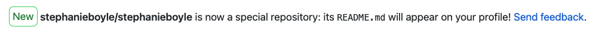
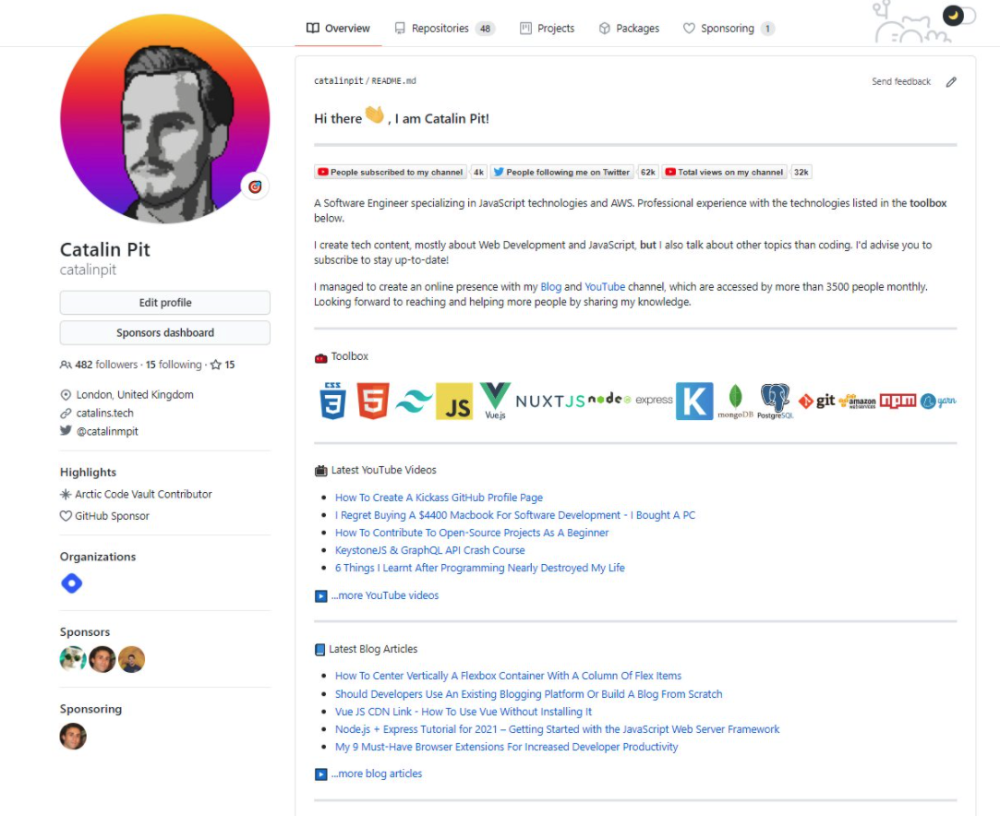
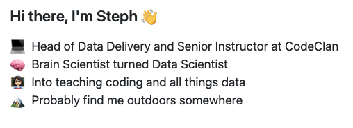
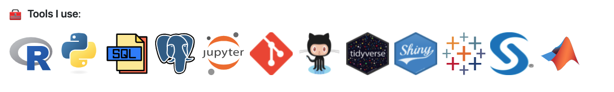
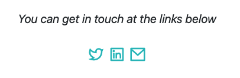

FROM THE ARCHIVE · 2020
Creating a personalised README for your GitHub profile
A little corner of GitHub that feels like you.
Originally written in 2020. Interfaces and links may have changed.
One of the nice things I recently discovered is that GitHub has a feature which allows you to add a README to your profile page. And from seeing some examples people have made already, it seems like a really great way to summarise your skills and projects, and to introduce yourself to the community.
Creating the repo
The first thing you need to do is create a repo for your README. You need to call this the same as your username. So my GitHub username is stephanieboyle, so my repo was also called stephanieboyle. Once you do that, you'll get a _special message_.

Once you've got that, you're good to start editing. I just edited mine in the browser, as it seemed a bit much to clone it down just to make a README.
Adding the content
To get me started, I followed this great tutorial from Catalin Pit which I found on twitter (original link no longer available). He walks you through how to create a README that looks like his below.

He's actually made a whole youtube video explaining it step by step, and it's really worth checking out as most of the info you need is there.However, there are some differences that I added into mine, only because some of sites mentioned in that tutorial are more relevant if you're an active software dev / github contributor / youtuber. I'll briefly touch on these below.
About info
One part of mine that is different is I didn't make the social buttons as prominent. I don't have a huge social media presence, so I didn't really need to put in some of the badges with follower counts. Instead, I just went with a wee bio and of course, lots of emojis. I really like seeing info about jobs, previous experience and what people are into on their READMEs, so I decided to go with that.

Tech Stack Icons
The part I really liked about Catalin's README was the use of icons to show what languages and tools you use and know. The tutorial above mentions to use a fantastic collection of icons on the github/devicons page. However, this is more for software dev I'm guessing, as some of the data ones I wanted didn't exist there. I followed the same idea as the repo above, but just used free icons from the web that I've stored in a github repo called data_icons on my page (original link no longer available).

These were simple enough to add, but here is a wee code snippet just for two to show you how it's done.
``` <img src="https://github.com/devicons/devicon/blob/master/icons/r/r-original.svg" alt="R logo" width="60" height="60"/> <img src="https://github.com/stephanieboyle/data_icons/blob/master/icons/git/git-logo-small.png" alt="git logo" width="60" height="60"/>
```
Contact Section
The last and final part I decided to do (for now!) was add a contact section. For this, I just added html links and icons (that are again, saved in my github) so that people could contact me. I got these icons from Remixicon, as they always have a lot of good icons on it. I just changed the colour to suit what I wanted.

And the code to do so:
``` <p align="center"> <i>You can get in touch at the links below</i><br><br> <a href="https://twitter.com/_stephanieboyle" alt="Twitter logo"><img src="https://github.com/stephanieboyle/data_icons/blob/master/icons/social_icons/twitter-line-green.svg"></a> <a href="https://www.linkedin.com/in/stephanieboyle9/" alt="Linkedin-logo"><img src="https://github.com/stephanieboyle/data_icons/blob/master/icons/social_icons/linkedin-box-line.svg"></a> <a href="mailto:stephanie.boyle@codeclan.com" alt="Contact me"><img src="https://github.com/stephanieboyle/data_icons/blob/master/icons/social_icons/mail-line.svg"></a> </p>
```
And there we go! The finished README looks pretty good, and it really didn't take much time at all. You can check it out on my github here.